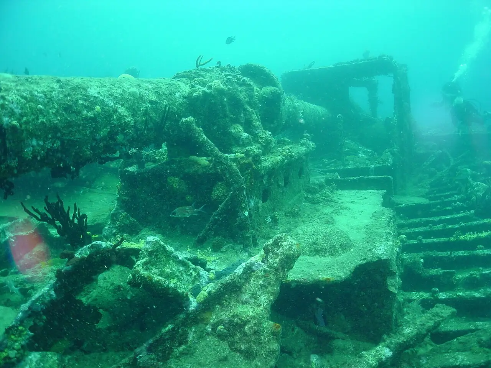

Épave du RMS Rhone
Salt Island, Îles Vierges britanniques · plongée, snorkeling

Paquebot postal britannique coulé lors d’un ouragan en 1867 au large de Salt Island. L’épave repose entre quelques mètres et environ 25 m de fond, au cœur d’un parc marin.
- Lieu
- Salt Island, Îles Vierges britanniques
- Niveau
- Intermédiaire
- Activités
- plongée, snorkeling
- Type d'eau
- Mer / océan
- Coordonnées
- 18.37, -64.54 (position approximative du secteur)
Dangers à connaître
- Courant possible sur le site : plongée encadrée recommandée.
- Structures métalliques coupantes : ne pénètre pas dans l’épave sans formation.
Le conseil d'Ocean Buddy
Plonge avec un centre local : l’amarrage est réglementé dans le parc marin et les bouées sont vite occupées.
Ouvrir dans Ocean Buddy Télécharger sur l'App Store
Source : Fiche Ocean Buddy · septembre 2026 · à vérifier localement.